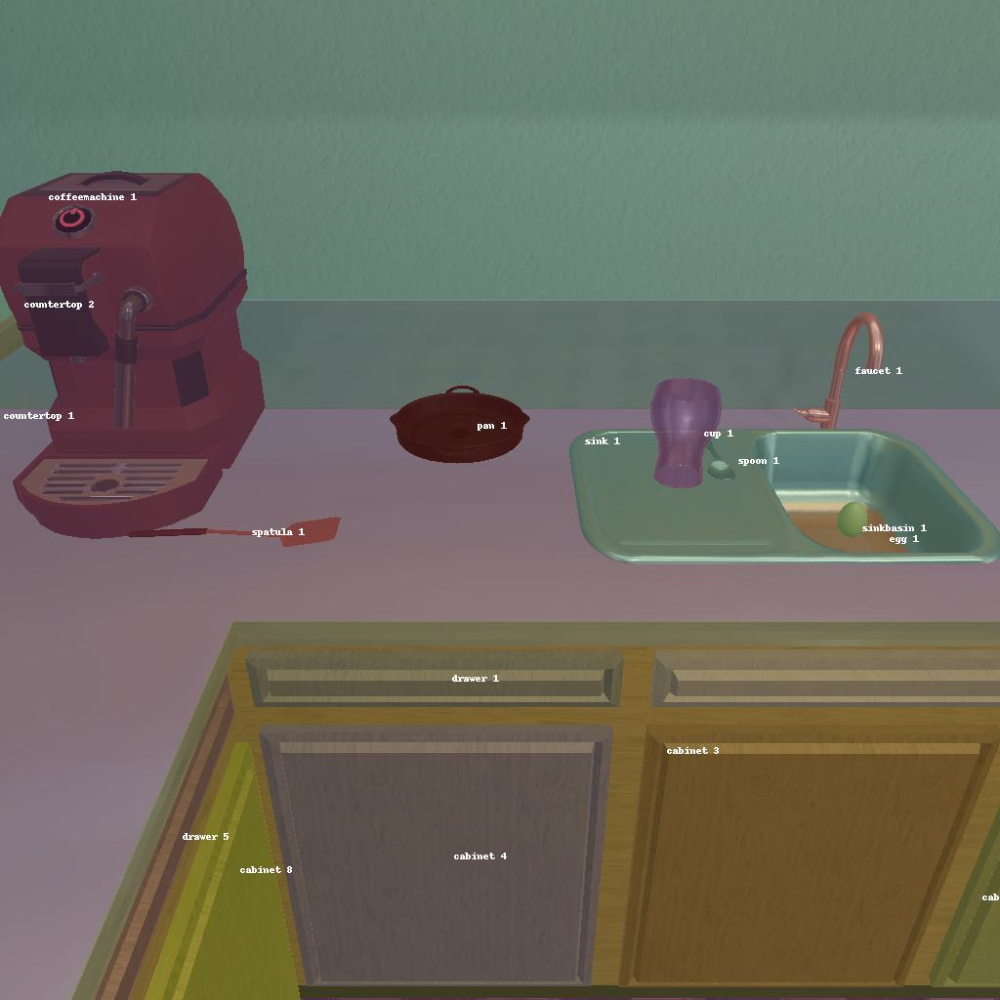
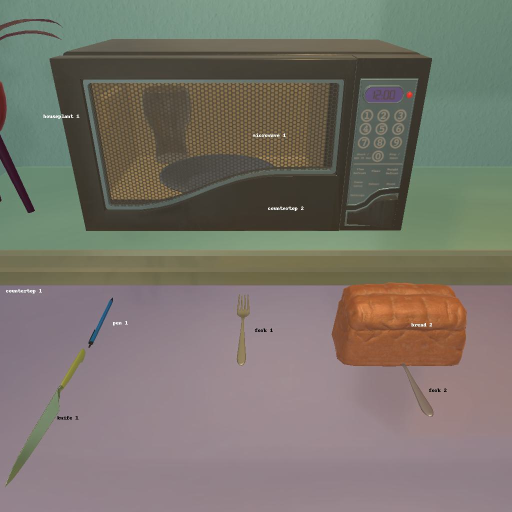

---------------------------------------------------------task: 22---------------------------------------------------------
--------------------------------------------------------------------------------------------------------------------------------------------------------------------
--------------------------------------------------------------------------------------------------------------------------------------------------------------------
Step:--------------------------------------------------------------------------14-------------------------------------------------------------------------------
----------------------------------------
VLM Prompt:
Image1:
Image2:
Image3:
**Instruction**
1. Analyze the provided image to identify all visible household objects, focusing on those relevant to the task description "heat some egg and put it in countertop."
2. Use the analysis of the image and the task hint "The agent must find an object of the desired type, pick it up, go to a microwave, heat the object with the microwave, then find the correct location to place it, and put it down there. The agent does not need to use the microwave button or open the microwave to heat the object, and the agent just needs to do action that is "heat the object with the microwave"." to answer the question: what is the most reasonable action in the choices for the task description "heat some egg and put it in countertop"?
4. Decide and write the answer using the template: The answer is: (i): , where i is the real number. If there is no desired object in the image, search every place based on **Initial Observation** to find the object. And if no one is exactly correct, choose a similar answer.
**Initial Observation**
You are in the middle of a room. Looking quickly around you, you can see cabinet (1-18), countertop (1-4), sink (1), drawer (1-7), sinkbasin (1), coffeemachine (1), microwave (1), garbagecan (1), stoveburner (1-4), toaster (1), fridge (1)
**Answer Choices**
(1): go to cabinet 1
(2): go to cabinet 2
(3): go to countertop 1
(4): go to cabinet 4
(5): go to cabinet 5
(6): go to sink 1
(7): go to cabinet 6
(8): go to drawer 1
(9): go to drawer 2
(10): go to sinkbasin 1
(11): go to cabinet 7
(12): go to cabinet 8
(13): go to coffeemachine 1
(14): go to cabinet 9
(15): go to countertop 2
(16): go to cabinet 10
(17): go to drawer 3
(18): go to drawer 4
(19): go to garbagecan 1
(20): go to drawer 5
(21): go to cabinet 11
(22): go to cabinet 12
(23): go to cabinet 13
(24): go to cabinet 14
(25): go to stoveburner 1
(26): go to countertop 3
(27): go to stoveburner 2
(28): go to stoveburner 3
(29): go to stoveburner 4
(30): go to drawer 6
(31): go to cabinet 15
(32): go to cabinet 16
(33): go to cabinet 17
(34): go to cabinet 18
(35): go to toaster 1
(36): go to drawer 7
(37): go to countertop 4
(38): go to fridge 1
(39): open microwave 1
(40): close microwave 1
(41): examine microwave 1
**Answer**
Let's think step by step by following the instructions.
----------------------------------------
----------------------------------------
Original Response:
Firstly, we need to find an egg to heat. In Image 2, we can see there is an egg in the sinkbasin. Therefore, the first action should be to pick up the egg. However, this action is not listed in the provided choices.
Next, according to the task description, we need to heat the egg with the microwave. Image 3 shows a microwave on countertop 2, so we need to go there to heat the egg. Again, the action of heating the egg is not explicitly listed in the choices.
Finally, after heating the egg, we need to put it on a countertop. Since the task does not specify which countertop to use, we can choose any of the visible ones. Both Image 1 and Image 2 show countertop 1 and countertop 2, while Image 3 shows countertop 1, countertop 2, and countertop 3. Since the microwave is on countertop 2, it would be most reasonable to place the heated egg on the same countertop for convenience.
Thus, the most reasonable action from the given choices, after picking up the egg and heating it in the microwave, would be to place it on countertop 2. The answer is: (15): go to countertop 2.
----------------------------------------
----------------------------------------
>>> Refine Original VLM Response and Get Pure Action: go to countertop 2
----------------------------------------
-----------------------------------------------------------------
Running time: 17.111918926239014 seconds
Total Money: 14.307220000000006
-----------------------------------------------------------------
-----------------------------------------------------------------
Text Observation:You arrive at loc 16. On the countertop 2, you see a bowl 2, a ladle 1, and a ladle 2.
-----------------------------------------------------------------
UNSUCCEED